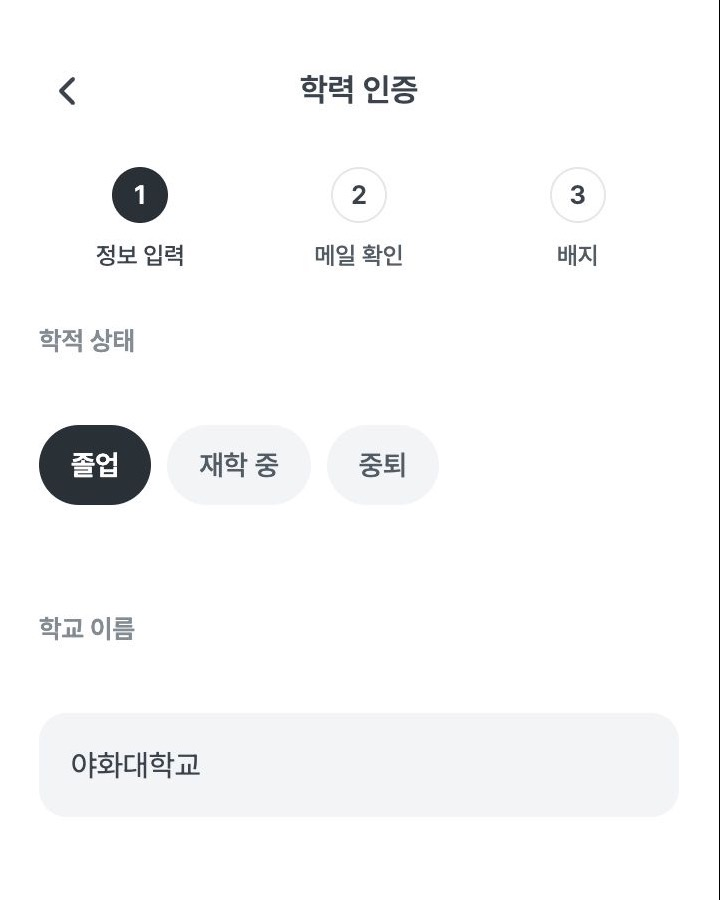
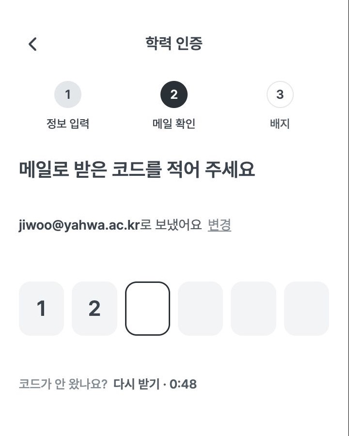

지금 문제: 흰 칸 + 테두리, 학력 · 직장 모두 "학교·회사명" 이름표, 단계 표시(1 정보 입력 · 2 메일 확인 · 3 배지)는 있는데 코드 입력까지 한 화면에 다 있어 2단계로 넘어가지 않아요. "인증코드 받기" 연한 하늘 버튼이 칸 사이에 끼어 간격이 무너지고, 이름 칸이 없는데 "이름과 이메일을 입력하고…" 안내. 소득은 기본 목록 · 기본 파일 선택 모양 그대로, "이메일 · 시연용" 같은 시연 꼬리표.
간단 벤치마킹 원칙(Mobbin 8개): 한 화면 한 가지 일 · 단계 수 = 실제 화면 수 · 코드 화면엔 보낸 주소 + 변경 · 자릿수 칸 + 글자 버튼 다시 받기 · 칸이 다 차야 눌리는 버튼 · 서류는 빈 상태 카드 안에서 올리기 · 값이 적으면 칩 · 메일 없는 사람을 위한 다른 길.
A 화면 나눔: 1 정보 입력(칩 · 학교/회사 이름 · 학교/회사 이메일, 다 채우면 "인증코드 받기") → 2 코드 6칸(보낸 주소 · 변경 · 다시 받기 0:48) → 3 "확인 요청을 보냈어요". 소득은 2가 서류 올리기(사진 찍기 · 파일 고르기 → 파일 줄 + 지우기, 어떤 서류면 되는지 목록).
B 한 화면 정리: 단계 표시를 빼고 한 화면에. 이메일 칸 안에 "코드 받기", 보내면 아래에 코드 6칸이 생겨요. 덜 바꾸는 안전한 안.
공통: 칸 · 칩 · 카드 모두 회색 바탕 · 테두리 없음, 쓰는 중인 칸만 진한 테두리. 시연 꼬리표 · 덧글 빼기. 버튼은 칸이 다 차기 전엔 흐리게.
A 고름 · 위 단계 표시 다듬기 (화면 위쪽만 잘라서)
지금 단계 표시: 셋째 "배지"는 실제 화면이 아니에요(3번 화면은 "확인 요청을 보냈어요", 배지는 확인 뒤에 생김). 끝난 단계도 회색 숫자라 지나왔는지 안 보이고, 숫자 원 + 이름표가 세로로 72 가까이 차지해요. 그래서 단계는 실제로 넘어가는 두 화면(정보 입력 → 메일 확인 · 서류 올리기)만 세고, 끝 화면엔 단계 표시를 두지 않아요.

지금 · 1

지금 · 2
S1 얇은 막대 두 칸 + "1 / 2" + 단계 제목 1단계에도 "학교 정보를 적어 주세요" 제목